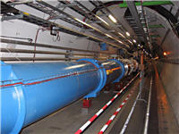

Una historia de la creación y el Gran Colisionador de Hadrones
En la conferencia que les presento en esta notación, Brian Cox dice: “Si los físicos de partículas son algo, es ser ambiciosos”, y vaya que lo son.
Los experimentos de la física de partículas tratan de descubrir los constituyentes últimos de la materia, intentan averiguar de qué está hecho el universo. El método es esencialmente acelerar fragmentos de materia a velocidades enormes y hacerlos chocar. Rompe primero y averigua después.
Básicamente eso es lo que hacen los aceleradores de partículas, y en esta conferencia verán la explicación de lo que se pretende conseguir con el mayor acelerador jamás construido: el Gran Colisionador de Hadrones, o también conocido por sus siglas en inglés: LHC.
Unos datos sobre el LHC, para poner un poco de contexto a lo que escucharán en la conferencia:
- La máquina más grande del mundo
Tiene 26,659 metros de circunferencia, con un total de 9,300 magnetos en su interior. Estos magnetos se pre-enfrían a -193.2º C utilizando 10,080 toneladas de nitrógeno líquido, antes de ser llenados con casi 60 toneladas de helio líquido para llegar a los -271.3º C.
- La pista de carreras más rápida del mundo
Cuando esté a su completa potencia, trillones de partículas recorrerán el anillo completo del LHC 11,245 veces por segundos, viajando a 99.99% la velocidad de la luz, con alrededor de 600 millones de colisiones ocurriendo cada segundo.
- El lugar más vacío del Sistema Solar
Para evitar que las partículas que viajan en el acelerador choquen con moléculas de gas, el interior del anillo se mantiene en un súper-vacío, como el que existe en el espacio interplanetario. La presión en el interior del LHC es 10 veces menor que la que existe en la superficie de la luna.
- Con los sitios más calientes de la galaxia, pero más frío que el espacio exterior
Cuando dos haces de partículas colisionen, generarán temperaturas más de 100,000 superiores a la del núcleo del Sol, estas temperaturas estarán concentradas en un diminuto espacio. Por otra parte, el sistema de refrigeración del LHC, mantendrá al anillo a -271.3º C, temperatura inferior a la del espacio exterior.
- El sistema de supercomputadoras más grande del mundo
Los datos producidos por los experimentos del LHC generarán serán suficientes para llenar 100,000 DVDs de doble capa cada año. Para que los científicos que se encuentran esparcidos alrededor del planeta puedan colaborar en el análisis de dichos datos, decenas de miles de computadoras alrededor del mundo están siendo conectadas en una red de cómputo distribuido llamada Grid.
El ponente
Brian Cox es un físico de partículas, miembro investigador de la Sociedad Real para el Avance de la Ciencia Natural del Reino Unido, y profesor de la Universidad de Manchester, Inglaterra. También es miembro del grupo de investigación de física de alta energía de la Universidad de Manchester, y trabaja en el experimento ATLAS en el LHC.
Es conocido como presentador de programas científicos en la BBC, y a principios de la década de los noventa fue miembro de una banda de rock, los D-Ream.
Conferencia: Una historia de la creación y el LHC
Descarga* este video en resolución media (432×240): BrianCox_2008_spanish.zip (video 57.9 MB)
Descarga* este video en HQ (850×480): Parte 1.rar Parte 2.rar (video 126 MB)
-Para la versión HQ, reunir las 2 partes en la carpeta deseada y extraer con WinRAR.
Video: mp4, audio: AAC
Traducción y subtitulado: Ajmme Kajros
También disponible en YouTube
En TED: Brian Cox: An inside tour of the world’s biggest supercollider.
Extra:
La imagen sobre la que Brian Cox narra la historia del universo vale la pena ponerla aquí para que la vean en español.
Historia del Universo (NASA)
(El satélite y la leyenda WMAP al final de la línea de tiempo se refiere al proyecto de la NASA, Wilkinson Microwave Anisotropy Probe -enlace en español).
*Archivo subtitulado y distribuido bajo los términos de uso de TED Conferences LLC.
Metadatos y acciones
 Temas: ciencia, fisica, tedtalk, universo, video ⋅
Para guardar: Enlace permanente a esta anotación.
Temas: ciencia, fisica, tedtalk, universo, video ⋅
Para guardar: Enlace permanente a esta anotación.
 Print This Post
Print This Post
Comentarios
Los comentarios están cerrados.
Categorías
Últimas 4 anotaciones
Últimas anotaciones en cada categoría

Divulgación
El dinero no fomenta la creatividad: Daniel Pink en TEDGlobal 2009

Inspiración
Los 30 no son los nuevos 20

Noticias
Ver tu mente en tiempo real: Christopher deCharms en TED 2008
![Música en la era digital [Animación]](../../../wp-content/themes/tma/images/featured/animation_04_2009_featured.jpg)
Ocio
Música en la era digital [Animación]
abril 23, 2009, 5:27 pm
Información Bitacoras.com…
Valora en Bitacoras.com: En la conferencia que les presento en esta notación, Brian Cox dice: ?Si los físicos de partículas son algo, es ser ambiciosos?, y vaya que lo son. Los experimentos de la física de partículas tratan de descubrir los consti…
abril 30, 2009, 12:05 am
[...] [...]